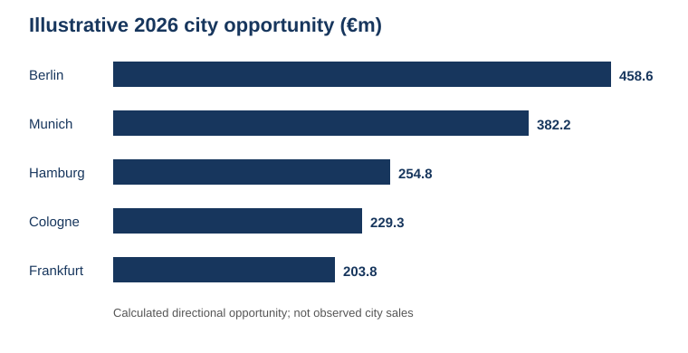
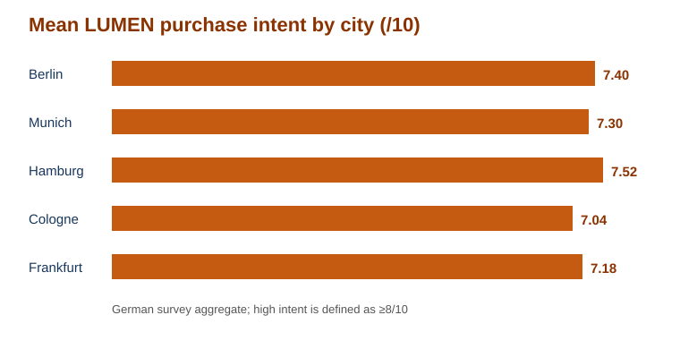
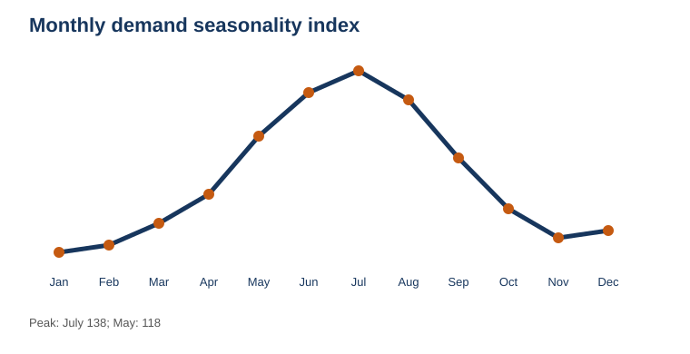

Germany market entry
Choose the first city. Choose the learning window.
The recommendation combines the illustrative German market split with anonymized survey aggregates, seasonality, weather context, and competitor promotion patterns. It is a launch hypothesis to validate, not a forecast of observed German sales.
The recommendation
Launch first in Berlin in May 2027, use Hamburg as the challenger test, and keep Munich as the next expansion option. Track acceptance, repeat purchase, channel contribution, and fulfilment-adjusted economics before scaling.
01 · BerlinPriority launch market with the strongest opportunity case.
02 · HamburgChallenger market to test whether demand signals travel.
03 · MunichExpansion option after the first validation gates are met.



Evidence boundary. Customer names and email addresses were not used or exposed. Read the full assumptions, sources, limitations, and test plan in the market, city and timing analysis.